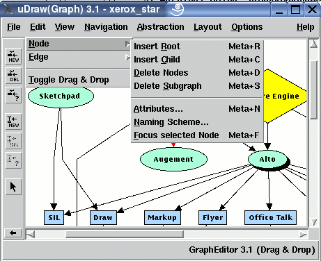

Manual
Edit/Node Menu
The "Edit/Node" menu contains operations to manipulate the nodes of a graph, i.e. inserting nodes, deleting nodes and modifying node attributes.
Note: menu operations can also be invoked without the mouse by using keyboard commands.
-
Insert Root
To insert a new root node in the graph, i.e. a node which has no parent or child node. The new node will have the attributes which are currently set in the node attributes dialog The text of the new node is determined by the current content of the naming scheme dialog. -
Insert Child
To insert a new child node in the graph, i.e. a node which is connected with its parent node(s) using a directed edge. The new node will become the child of all nodes that are currently selected, so this operation inserts the edges from the parent(s) to the new child node, too. Obviously, this menu operation is disabled when no node is selected. The new node will have the attributes which are currently set in the node attributes dialog The text of the new node is determined by the current content of the naming scheme dialog. -
Delete Nodes
To delete the currently selected nodes and all of their edges from the direct parents and to the direct children. The edges are also deleted to avoid incomplete edges where a parent or child node is missing. This menu operation is only available when one or more nodes are selected in the graph. -
Delete Subgraph
Same as "Delete Nodes" above, but removes the complete subgraph of the currently selected node, too. The subgraph of a node are all its successor nodes (its children, and their children, and so on) that belong exclusively to this node. So the recursive deletion process stops as soon as there is a child node that has at least one parent node which is not deleted here at the same time. This menu operation is only available when exactly one node is selected in the graph. -
Attributes...
To open the node attributes dialog where the attributes of the currently selected node(s) can be modified. The attributes specify the visual appearance of a node in the graph visualization. This menu operation is disabled when no node is selected in the graph. You can also open this dialog with a double-click on a node. -
Naming Scheme...
To open the naming scheme dialog where the text pattern of new nodes can be specified. The text of each inserted node is assigned automatically by using this pattern. -
Focus selected Node
To scroll to the currently selected node in the graph visualization if this node is not already centered in the base window. This menu operation is only available when exactly one node is selected in the graph.
Copyright © 2005, Universität Bremen. All rights reserved.